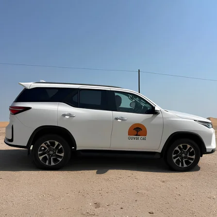
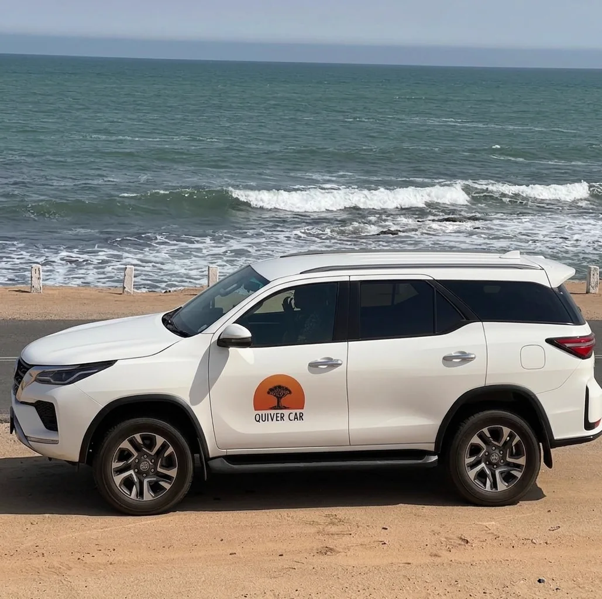

The Namib Interior
Wide gravel roads and open horizons inland from Swakopmund — a favourite for visitors wanting real distance.

Swakopmund · Namibia
Some of the routes, coastlines and desert roads our clients have taken the Fortuner to. Real trips, real places — more are added as guests send through their photos.
From the road
Wide gravel roads and open horizons inland from Swakopmund — a favourite for visitors wanting real distance.

Salt roads and Atlantic fog along the coastline north of Swakopmund — cool, dramatic, and easy in the 4x4.

Many trips start or end at Hosea Kutako International Airport, with a stop in the capital along the way.
Been on a trip with us? Send your photos and a line about where you went by WhatsApp or email, and we may feature it here.
Ready when you are
Three days or a month — send us the details and we will confirm availability and come back with a quote.